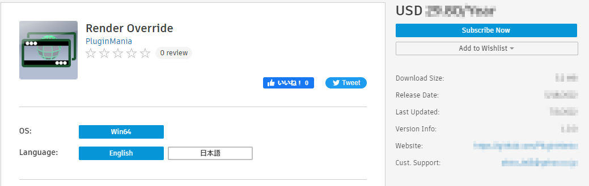
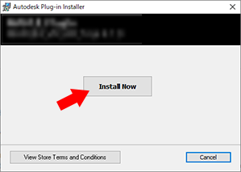

Download and install plug-ins¶
Contents of this page:
How to download and install plug-ins¶
Download the installer from AutodeskAppStore.
After selecting a payment method and activating it via the “Free 30-Day Trial” button, you can use the software for the first 30 days without debiting any fees.
Run the downloaded installer.
Follow the instructions in the installer to install the software.
Close the installer when installation is complete.
Notes on downloading and installation¶
Please download the installer from AutodeskAppStore
We do not distribute the installer outside of the AutodeskAppStore.
If AutodeskAppStore is unavailable due to maintenance or other reasons, please wait until it is restored.
Note
If you encounter any trouble, please report it via “Report bugs, suggest new features, etc.”.